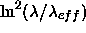
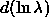

The situation with the SDSS response functions for the five filter
passbands, and the resulting photometric system, is rather
complex. There is a set of primary standard stars which
have been measured at the U. S. Naval Observatory 40'' telescope and
with the SDSS
Photometric Telescope (§ 3.4) which together define a
photometric system which
we believe to be self-consistent to approximately 1%; this system is
roughly as described in fukugita96. These primary standards are
described further in § 4.5 below. Unfortunately, the
filters used on the USNO and PT telescopes differ systematically from
those on the 2.5m camera, and we still do not
have a complete understanding of the transformations between these two
systems . Thus the photometric system defined by the USNO and PT
telescopes is not directly applicable to the 2.5m data, as described
in detail in § 4.5.
Figure 4 gives the average measured
quantum efficiencies of the 2.5m camera detectors multiplied by the
reflectivity of the primary and secondary (the two transmissive
surfaces have negligible effect on the throughput); curves are given
both assuming no atmosphere, and including the
transmission of the atmosphere above Apache Point on a night of
average humidity at airmass 1.3.
Tables containing the system response in each filter are available on our web sites.
The thinned CCDs also suffer from
internal scattering that scatters light longward of roughly 6000Å\
into an extended halo around an object; this decreases the effective
quantum efficiency for a point source. For extended sources (size
>30''), this effect is negligible, and the dashed curves indicate
the quantum efficiency in this case in the r and i filters. The
z chip is thick, and does not suffer from this problem.
. Thus the photometric system defined by the USNO and PT
telescopes is not directly applicable to the 2.5m data, as described
in detail in § 4.5.
Figure 4 gives the average measured
quantum efficiencies of the 2.5m camera detectors multiplied by the
reflectivity of the primary and secondary (the two transmissive
surfaces have negligible effect on the throughput); curves are given
both assuming no atmosphere, and including the
transmission of the atmosphere above Apache Point on a night of
average humidity at airmass 1.3.
Tables containing the system response in each filter are available on our web sites.
The thinned CCDs also suffer from
internal scattering that scatters light longward of roughly 6000Å\
into an extended halo around an object; this decreases the effective
quantum efficiency for a point source. For extended sources (size
>30''), this effect is negligible, and the dashed curves indicate
the quantum efficiency in this case in the r and i filters. The
z chip is thick, and does not suffer from this problem.
The camera responses were measured by an instrument with a roughly triangular wavelength response with FWHM about 100Å; this resolution has not been corrected for in these data but does not appreciably alter the shapes. Better and more detailed response data will be obtained and published later, but the results here are adequate for most purposes.
Table 19 gives corresponding properties of
the filters, updating those tabulated in fukugita96 and
fan01a: the effective wavelength of each filter , the
photon-weighted mean of the quantity 
(a measure of the effective width of the filter),
the Full Width at Half Maximum of the filter, and Q, the integral of the
system efficiency over , effective quantum
efficiency (all assuming 1.3 airmass, and observing a point source). This
last quantity relates the measured apparent magnitude (on an AB
system) to the number of detected electrons:
where t is the exposure time in seconds.
As pointed out in § 1, we refer to data on the standards system with the magnitude
labels (u' g' r' i' z') and the provisional 2.5-meter magnitudes
with the labels ( ). The SDSS photometry itself
is presented in the provisional 2.5-meter system. Finally, the 2.5-meter
filters themselves are referred to in this paper simply as u, g, r,
i, and z, a change from some of our earlier papers.
). The SDSS photometry itself
is presented in the provisional 2.5-meter system. Finally, the 2.5-meter
filters themselves are referred to in this paper simply as u, g, r,
i, and z, a change from some of our earlier papers.